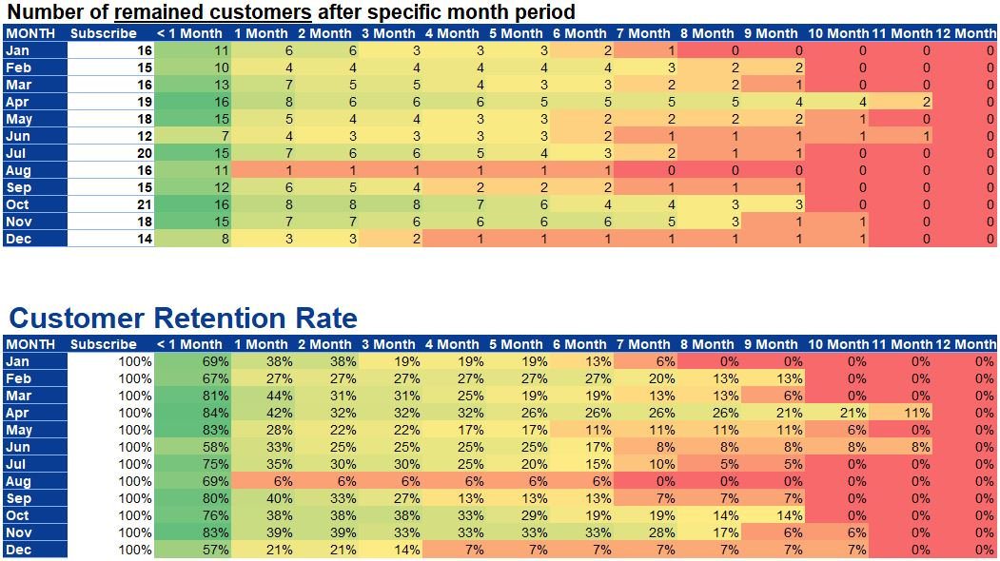

Customer Retention Analysis
DATA DESCRIPTION: data of customers subscribed company service from 2018 and active or unsubscribe in 2018-2019. The dataset with problems of wrong data format, wrong order of user_ID.
DATA PREPARATION: adding necessary columns for later analysis (such as Start Date, Start Month - the date/month when customers subscribed, Month Period - number of months customers maintained their subscription).
DATA ANALYSIS: using Pivot Table to re-arrange data for showing NUMBER OF CUSTOMERS UNSUBSCRIBED after specific month periods. From that result, I calculated NUMBER OF CUSTOMERS SUBSCRIBED after specific month periods above, then transfered those numbers into RETENTION RATE. Everything was performanced in EXCEL worksheets.
NARRATIVES: The result shows the customers onboarding in August 2018 had the highest rate to continue subscribing; Just within one month, number of the customers onboarding in June and December 2018 left the company was more than 50%; The company mostly couldn't keep the customers in the 10th month of using service; the highest rate of customers staying with the company after 10th and 11th month is from the onboarding in April and June.